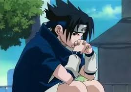

Q u i e s t l e p e r s o n n a g e l e p l u s d e t e s t e r
alors il y a beacoup de personnage qui ne sont pas aprécier mais celui qui revient le plus dans le top 1 est Sasuke Uchiha.
Sasuke uchiha est dans Naruto, il est un personnage secondaire et l'un des plus puissants de l'univers de Naruto. Il est le décendant de la famille Uchiha dont leur pouvoir (le Sharringan) permet de copier n'importe quel technique de l'adversaire
Le problème avec Sasuke c'est qu'il a un passé dont il vit toujour dans le traumatisme et qu'il est tout le temps triste et qu'il est aigri et il veux repouser tt le monde pour poursvivre son rêve
